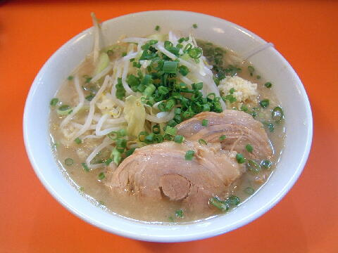

市原市 西国分寺台 1-3-1
月・火
11：15〜15：00 18：15〜22：00
日 11：15〜15：00 18：15〜21：00
店員は、二郎京成大久保店で修行した店主と奥様。あとバイト。
コショウ、唐辛子。
レンゲ有、エコ箸、厚手のティッシュ。
BGMは、ロック。
トッピングは、ニンニク、ヤサイ、アブラ、カラメ、ネギ。あとラー油（非表示）。
有料トッピングは席についたらすぐにコールすること。
「ラーメン ちばから」でヤフー検索
「ラーメン ちばから」でヤフーリアルタイム検索
「ラーメン ちばから」でグーグル検索

らーめん ニンニクネギ
麺は、ツルツルした食感の白っぽい自家製麺。
ぶたは、厚切りで大ブリの＠ぶた。現在は大判のぶたが１枚。
スープは、見た目はド乳化だが食感はマイルドでクリーミーなスープ。
ヤサイは、モヤシ9：キャベツ1の割合。程好く茹でられていた。
ニンニクは、細かく刻まれたニンニク。
これにトッピングのネギ（現在は白ネギ）
つけ麺 醤油 ネギ
トッピングは、ラーメンと同じ。
タレの皿は、程良い酸味のあるタイプ。トッピングの青ネギ（現在は白ネギ）はこちら。
麺の皿には、麺とヤサイ、細切れの豚、貝割れ大根（現在は無）そして温泉玉子。
皿が歪んで見えるが、写真のせいではない。
つけ麺 ごまだれ 麺増し
タレがごまだれとなる。
油そば（醤油） ニンニクネギ
ちばからの油そば。
構成はつけ麺と同じ（左下の玉子は温玉）。
わずかな辛味がついていた
油そば（ごまだれ） ニンニクネギ
ちばからの油そばのごまだれバージョン。
構成は醤油と同じ（左下の玉子は温玉）。
ＰＣ店